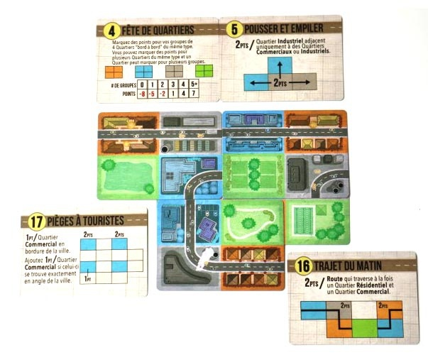
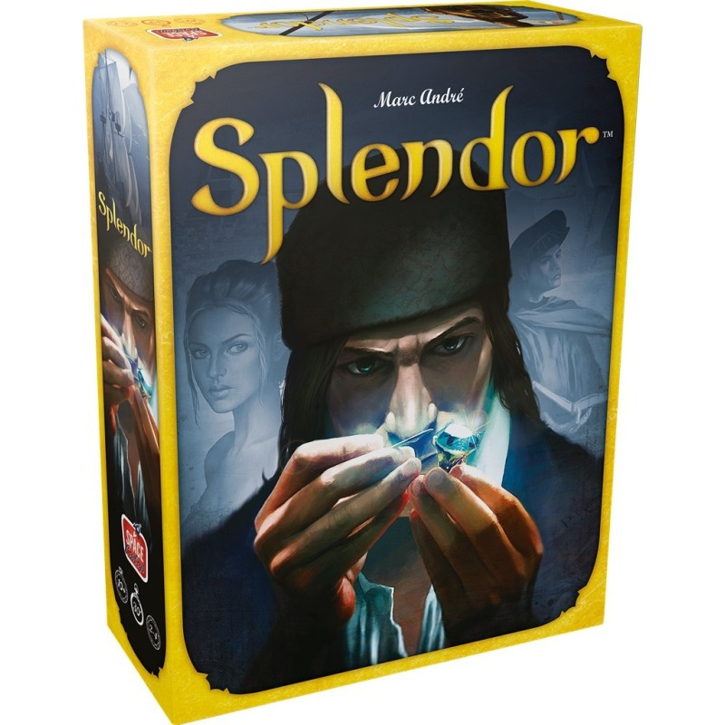

Romane CAVEY
Dans le cadre de mes études , de mon stage ou durant mon temps libre, j'ai réalisé de nombreux projets, dans des languages de programmation divers.
Dans la cadre de mon stage de 2 mois chez Citron en 2024, j'ai réalisé un manager de Feature Flag via une API REST
- Manager de Feature Flag
- Lien vers le projet:
JavaScript:
- Modélisation du jeu Mégalopolis
- Lien vers le projet:

En C :
- Modélisation du jeu Splendor
- Lien vers le projet:

- Modélisation du jeu Carcassonne
- Lien vers le projet:
En Python:
- Réalisation de mini projets , notamment sur l'approximation de solutions d'équations différentielles ou d'interpolation